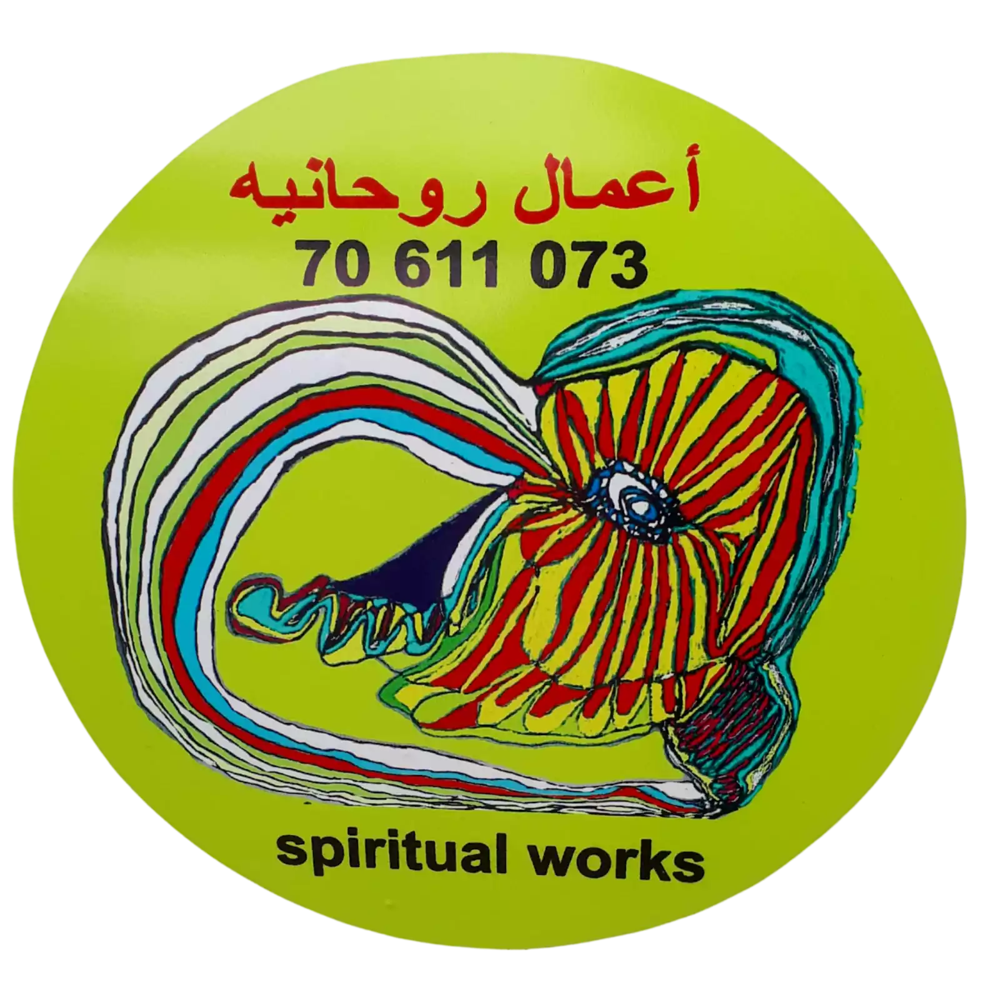

Haidar Medlej
English
Español
Русский
हिंदी
Français
Meditation
What is Raja Yoga Meditation?
How to Meditate
Where to Meditate
Time for Meditation
Who uses Raja Yoga Meditation
Retreat Centres
Experience Meditation
Wisdom
Experience Raja Yoga
Soul
God Knows
Tree in Time
Wheel of Life
Karma
A narrative of love
Essential Spirituality
Healthy Living
Spiritual Tools
Courses We Offer
Online Talks
Hope
Environment
Renewable Energy
Leadership
Women and Men
Youth
Glimpses of Hope
Discovery
Inspirations from Dadi Janki
The Mindful Kitchen
Articles
Virtuescope
Events Near You
Ebooks
Bookshop
Home
About us
Introduction
The Students
Experiences We Offer
The Haidar Medlej Story
BKs at the UN
FAQs
Give Us Your Feedback
Centre locator
Online Talks
Search
Sort by:
Top Rated
Most Recent First
Most Recent Last
Top Rated
Most Downloaded
Most Viewed
Most Discussed
Words for the World - Detachment
Slowing down the Speed of Time
Soul Connections 02 - Right action, Right thoughts
Experiencing God as Beyond
Soul Connections 05 - Awareness - observe, check and change
Soul Connections 11 - Healing Rejection
Change a habit, Sister Manda
How to Release Your Wings Part2.mp4
Power of Respect
Spiritual Power in Practical Life 1 of 3
Awakening Relationships Part 5
Page 8 of 13
First
Prev
3
4
5
6
7
8
9
10
11
12
Next
Last
Download BeeZone, a Multilingual Meditation App on Your Mobile